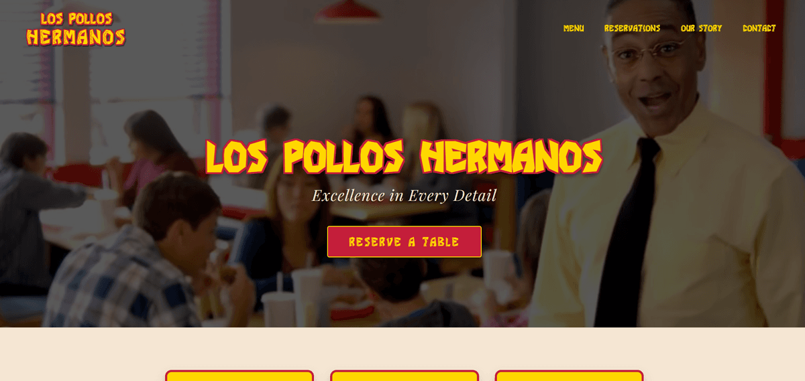

My work



Yo, I’m Jesse Pinkman, yeah? I build websites with vanilla JS, no frameworks, no weird magic, just clean code that actually works. I take a messy design and cook it into something pure and pixel-perfect, like 99.6% pure. Responsive, accessible, fast. Yeah, science! Some of my best work is down below, so scroll down and check it out. It’s tight, trust me.
